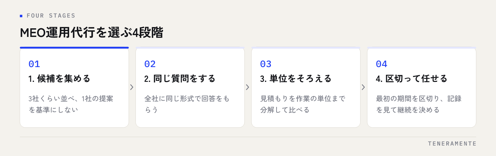

MEOの運用を外注しようと何社か調べ始めると、提案の中身がどれも似て見えてきます。順位を上げます、口コミを増やします、投稿を代行します——言葉はほぼ同じで、違うのは金額だけ。MEO運用代行の選び方で差が出るのは、提案の言葉ではなく、毎月の作業の単位と権限の扱いがどこまで書かれているかです。この記事では、契約前に確認する10項目と、見積もりをそろえて比べる手順を整理します。
📌 この記事の結論
MEO運用代行は、毎月何をどれだけやるかが書面に書かれている業者を選んでください。順位の保証をうたう契約と、Googleビジネスプロフィールのオーナー権限を業者側に預けたままにする契約は避けるのが安全です。見積もりは総額ではなく、作業の単位までそろえてから比べます。
01MEO運用代行で任せられることと、手元に残る仕事
最初にやるべきは、外注しても店側に残る作業を把握することです。ここを曖昧にしたまま契約すると、「思っていたより手間が減らない」という不満になります。
任せられるのは、Googleビジネスプロフィール（GBP）の情報整備、カテゴリや属性の設定、写真の登録、投稿の作成と公開、口コミ返信の文面作成、インサイトの確認とレポート作成といった手を動かす部分です。
一方で店側に残るのは、口コミ返信を店の言葉として認めるかどうかの判断、写真や動画の素材提供、営業時間や臨時休業の一次情報、提供しているサービス内容が正しいかの確認です。これらは店舗にしか分からない情報なので、代行の範囲外になります。
つまり外注しても店側の作業はゼロになりません。MEOそのものの全体像はMEO対策完全ガイドに整理していますので、何を任せるかを決める前に一度確認しておくと話が早くなります。
02業者選びは4段階に分けて進める
いきなり1社と細かい話を始めると、その提案が基準になってしまいます。順番を分けて進めてください。

- 候補を3社くらい集める
- 全社に同じ質問をして、同じ形式で回答をもらう
- 見積もりを作業の単位までそろえて比べる
- 最初の期間を区切って任せ、記録を見てから継続を判断する
この4段階のうち、飛ばされやすいのは2番目です。各社が得意な説明をしてくるので、聞き方をそろえないと比較になりません。質問は後述の10項目をそのまま使ってください。
03契約前に確認する10項目
次の10項目は、どの業者にも同じ言葉で聞けます。口頭の回答で済ませず、書面か提案資料に書いてもらってください。
- 毎月の作業内容と回数が書面にあるか（投稿は月何回、写真は何枚など）
- 誰が作業するか。担当者が付くのか、窓口だけで作業は別の人なのか
- GBPのオーナー権限を店側が持ったままにできるか
- 口コミ返信は下書きまでか、公開まで行うか。公開前の確認はどう通すか
- レポートに載る項目と、見るべき指標の説明があるか
- 最低契約期間と、解約を申し出る期限
- 順位の保証をしていないか。保証をうたう場合、その根拠
- いつ何を変更したかの作業記録が残り、店側も見られるか
- 契約終了後、登録した写真・投稿・作成物をそのまま使えるか
- 急ぎの依頼（営業時間の変更、臨時休業）をどの手段で何時間以内に通せるか
順位の保証には注意してください
Googleマップの順位は検索した人の現在地や検索語によって変わり、同じ店舗でも見る人によって違う結果になります。特定の語で何位を保証するという提案が出てきた場合は、どの地点・どの端末で計測した順位なのかを必ず確認してください。計測条件が書かれていない保証は、達成したかどうかを後から確かめられません。
04見積もりは「作業の単位」までそろえて比べる
月額の総額だけを並べても、安いほうが得かは判断できません。中身の量が違えば、単価はまったく別になります。次の表の形で、各社の回答を並べてください。
| 確認する項目 | そろえて聞くこと | そろえないと起きること |
|---|---|---|
| 投稿 | 月に何回、誰が原稿を書くか | 回数の違いを値段の違いと勘違いする |
| 写真 | 月に何枚、撮影は含むか | 撮影費が後から別途請求される |
| 口コミ返信 | 何件まで、公開まで行うか | 件数を超えた分が追加費用になる |
| レポート | 頻度と、載る項目 | 順位の画面写真だけが毎月届く |
| 打ち合わせ | 月何回、オンラインか訪問か | 相談したいときに窓口がない |
| 初期費用 | 何の作業に対する費用か | 情報整備済みでも同額を払う |
この表が埋まると、同じ金額でも中身が倍近く違うことが見えてきます。費用の内訳そのものの考え方はMEO対策の費用相場と内訳にまとめていますので、提示された金額が妥当かを判断する材料にしてください。
05契約条件で見落とされやすい3つのところ
オーナー権限
GBPには、オーナーと管理者という権限の区分があります。業者をオーナーにしてしまうと、契約が終わったときに権限を戻してもらう手続きが必要になり、連絡が取れない場合に手間が増えます。店側がオーナーのまま、業者を管理者として招待する形が安全です。
最低契約期間と解約の申し出期限
半年や1年の縛りがある契約は珍しくありません。問題は、解約の申し出期限が「当月末までに次月分」なのか「3か月前」なのかで、やめたいと思ってからの負担がまったく変わることです。
成果物の引き渡し
撮影した写真や作成した投稿原稿を、契約終了後に使えるかどうかを確認してください。使えない場合、乗り換えのたびに写真を撮り直すことになります。
06任せたあとに、毎月店側が確認すること
丸投げにすると、作業が止まっていても気づけません。月に一度、次の項目だけ確認してください。
- 営業時間・定休日・電話番号が今の状態と合っているか
- 先月の投稿が予定の回数どおり公開されているか
- 新しい口コミに返信が付いているか。返信の文面が店の言葉として違和感がないか
- 写真が追加されているか。古い内装や終了したメニューの写真が残っていないか
- レポートの数字が、前月と比べてどう動いたか。動いた理由の説明があるか
- 依頼した変更が反映されているか
レポートの読み方そのものはMEOレポートの見方で解説しています。数字の増減よりも、電話や経路案内といった行動につながった件数を見るほうが判断しやすくなります。
07よくある失敗とその避け方
- 金額だけで選ぶ：安い提案は作業量も少ない場合があります。月額を作業回数で割って単価をそろえてから比べてください
- 提案書の言葉で選ぶ：「上位表示」「最適化」といった言葉ではなく、何を何回やるかで比べます
- レポートを受け取るだけで読まない：届いた月に5分だけ目を通し、分からない数字はその場で質問する習慣にします
- 口コミ返信を完全に任せきる：店の言葉として読まれるため、公開前に目を通す流れを必ず作ります
- 営業時間の変更を伝え忘れる：年末年始や臨時休業は、決まった時点ですぐ共有する担当を店側で1人決めておきます
- 成果を見る前に長期契約へ移る：最初は短い期間で区切り、作業記録とレポートを見てから継続を決めます
外注の良し悪しは、業者の実力より先に、依頼の形で決まることが多くあります。
08自分で進める場合と、専門家に任せる場合の分かれ目
分かれ目になるのは、金額よりも「毎月決まった作業を続けられる人が店内にいるか」です。
自分で進めやすいのは、店舗が1〜2店で、情報の更新を担当する人が決まっていて、投稿や写真の追加を月に数回なら続けられる場合です。GBPの操作自体は難しくないため、担当者が固定できるなら、まず自分で動かしてみるほうが判断材料も増えます。
任せたほうが早いのは、店舗数が多く情報の整合を取るだけで時間がかかる場合、口コミが多く返信が追いつかない場合、担当者が繁忙期に入ると更新が止まってしまう場合です。また、複数の地点を同じ基準で運用したいときは、作業の形を決めて続ける体制があるほうが安定します。
判断の順番としては、自分で3か月やってみて、続かなかった作業だけを切り出して任せる形が無理がありません。全部を任せるより範囲がはっきりし、見積もりも比べやすくなります。順位の計測方法はMEOの順位と計測指標で触れています。
09よくある質問
オーナー権限を渡さないと、代行を断られることはありますか？
複数店舗をまとめて頼むと、1店舗あたりは安くなりますか？
途中で業者を変えると、積み上げたものはなくなりますか？
どのくらいの期間で判断すればよいですか？
10まとめ：聞き方をそろえると、比べられるようになる
MEO運用代行の選び方は、良い業者を見つけることより、同じ条件で比べられる状態を作ることが先です。毎月の作業内容と回数、オーナー権限の扱い、最低契約期間と解約条件、成果物の引き渡し——この4つが書面にあるかどうかで、契約後のやりやすさが大きく変わります。
いきなり全部を任せる必要はありません。まず自分で続けてみて、止まった作業だけを切り出して依頼する。この順番なら、見積もりの比較も、任せたあとの確認も無理なく回せます。
TENERAMENTEなら、この10項目にあたる作業内容と回数を最初に書面でお示しし、オーナー権限はお客様に持っていただいたまま管理者として運用します。いつ何を変更したかの記録と、電話や経路案内につながった件数を毎月ご報告しますので、順位の画面写真だけを受け取って判断に困る状態がなくなります。MEO対策の進め方をご覧いただいたうえで、お問い合わせからお気軽にご相談ください。